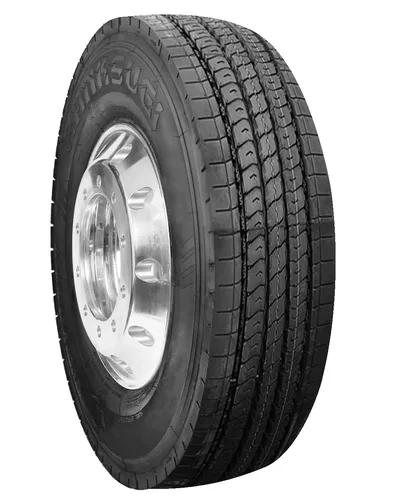
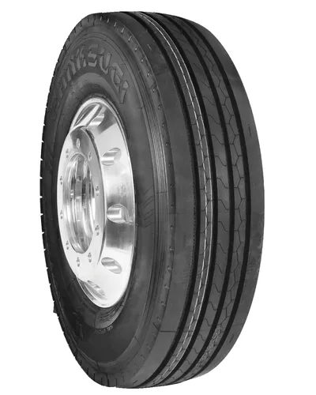
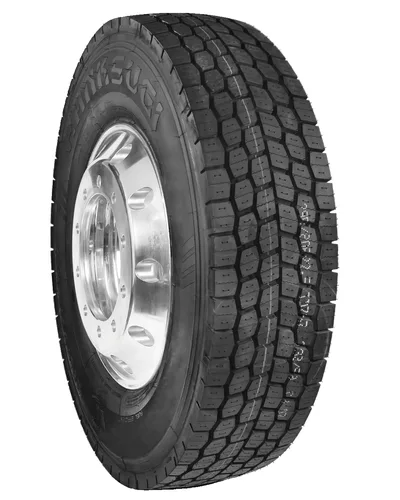
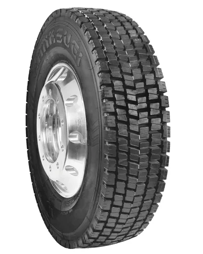
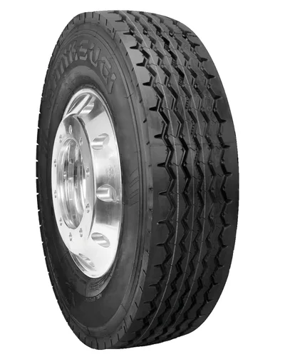

Ingeniería japonesa para un rendimiento superior
Hanksugi Japan se posiciona como una marca que integra tecnología avanzada y procesos de fabricación de alto nivel, ofreciendo neumáticos confiables y resistentes para el transporte de carga. Su enfoque en la eficiencia, la seguridad y la durabilidad la convierte en una opción ideal para quienes buscan maximizar el rendimiento en cada kilómetro.

HANKSUGI
HS-26 ZEUS
La Hanksugi HS26+ ZEUS GRIP es un neumático comercial para camión diseñada para transportes de larga distancia en carretera. Ideal para flotas que operan en las principales rutas de larga distancia en Argentina

HANKSUGI
HS-26 ORION
La Hanksugi HS26+ ORION GRIP es un neumático comercial para camión diseñada para aplicaciónes de eje libre (remolque). Está diseñada para transporte comercial de larga distancia en carreteras pavimentadas.

HANKSUGI
HS-28 TITAN
La Hanksugi HS28+ TITAN TRAX es un neumático comercial para camión diseñada para aplicaciónes de eje motriz (tracción). Tecnología para reducir el costo/km y la resistencia al rodamiento, maximizando el ahorro

HANKSUGI
HS-28 ORION
La Hanksugi HS28+ es un neumático comercial para camión diseñada para aplicaciónes de eje motriz (tracción). Apta para carreteras y vías en buen estado. Labrado extra profundo para mayor kilometraje y excelente tracción..

HANKSUGI
HS-30
Apta para velocidades altas y medias en buenas condiciónes de carretera. Excelente anti-deslizamiento lateral, baja resistencia al rodamiento, bajo ruido y drenaje. Buena estabilidad de conducción.